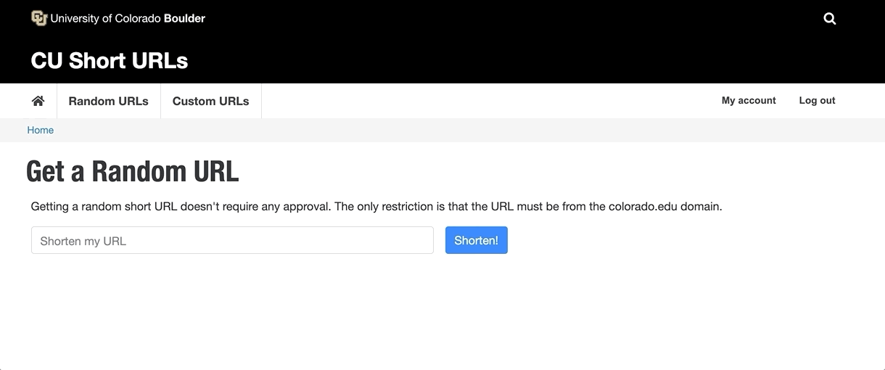

CU Short URLs
A new service provided by SRC Web Team
This service seeks to allow users to create short urls that match the university brand. We've created a new D9 site to interface with YOURLs, an open source link shortener.
We can go from a url like this, https://www.colorado.edu/academics/programs/technology-arts-media ,
to something like https://sho.rt/tam
Features
- Roles
- Generate Random URLs
- Create a url like https://sho.rt/dtj6h
- Restrict these urls to *.colorado.edu domains
- Application process for creating custom URLs
- Non *.colorado.edu links or custom paths will require approval
- Admins will review applications and upon approval, links will automatically be created
- Block to show a list of generated short links
- This block and be moved around to appear wherever admins would like
- Automatically send emails to users about their application status
- This feature can optionally be turned off
Roles
New users will automatically receive the Web Service Contributor role. This allows them to generate random urls and apply for a custom URL
The Web Service Admin role allows admins to view stats about existing short URLs and manage applications
If users are abusing the service, admins can remove the Web Service Contributor role from them, restricting their access
Configuration
Web Service Admins can easily connect Drupal to YOURLs

Let's generate a random URL
Now let's apply for a custom URL
Users have to fill out this form requesting the details about the short url they want
Managing URL Applications
Once a user has requested a short URL, an admin will have to either Approve or Reject it. Emails will automatically be sent to applicants notifying them of their status.

Time to visit the new link